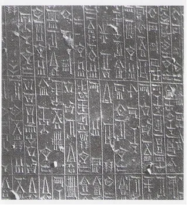
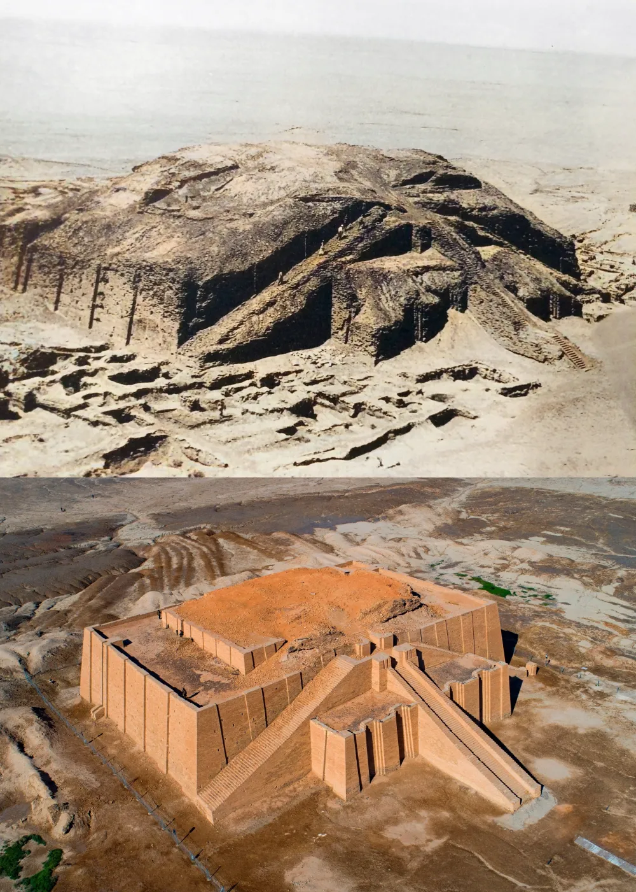

🏛️
02. 메소포타미아, 이집트, 지중해 문명 · 세계사 Ⅰ-1
✦ ✦ ✦
2학년 · 세계사
02. 메소포타미아, 이집트, 지중해 문명
◆
02 메소포타미아, 이집트, 지중해 문명
교과서 14~17쪽
📌 화면의 빈칸을 클릭하면 정답이 나타납니다
🏺
1. 메소포타미아 문명 — 성립 · 발전
✦ ✦ ✦
1. 메소포타미아 문명 (기원전 3500년경)
◆
【 성립 】
- 티그리스강과 유프라테스강 사이의 '비옥한 초승달 지대'에서 발생
【 발전 】
- 지리적 특징: 비옥한 토지 → 농업 발달, 개방적 지형 → 교역 발달
- 정치적 특징: 개방적 지형 → 지배 세력의 잦은 교체
수메르인
→
아카드인
→
아무르인
📜
1. 메소포타미아 문명 — 바빌로니아 왕국
✦ ✦ ✦
바빌로니아 왕국 & 함무라비 법전
◆
【 바빌로니아 왕국 】
-
바빌로니아 왕국 : 아무르인이 건국, 함무라비왕 때 전성기
【 《함무라비 법전》 편찬 】
- 쐐기 문자로 기록
- 당시 사회상 확인 가능
제196조 만약 한 자유인이 다른 자유인의 눈을 멀게 하였다면, 그의 눈을 멀게 할 것이다.
제198조 자유인이 평민의 눈이나 다리를 상하게 하면 은화 1미나(마누)를 바쳐야 한다.
제205조 만약 한 자유인의 노예가 자유인의 뺨을 때렸다면, 그의 귀를 잘라낼 것이다.
제198조 자유인이 평민의 눈이나 다리를 상하게 하면 은화 1미나(마누)를 바쳐야 한다.
제205조 만약 한 자유인의 노예가 자유인의 뺨을 때렸다면, 그의 귀를 잘라낼 것이다.

🛕
1. 메소포타미아 문명 — 문화
✦ ✦ ✦
메소포타미아 문명의 문화
◆
🏯 종교 · 정치
- 지구라트 건설
- 신정 정치 발달 — 왕 = 지배자, 제사장
기원전 21세기 우르남무 왕이 건설을 시작해 슐기 왕 때 완성
도시 수호신을 모신 신전이자 하늘과 땅을 잇는 통로로 여겨짐 → 신정 정치의 상징
도시 수호신을 모신 신전이자 하늘과 땅을 잇는 통로로 여겨짐 → 신정 정치의 상징
규모: 밑면 64m × 45m, 원래 높이는 약 30m로 추정 (아파트 10층 높이)
현재는 위층이 무너져 약 18m(아파트 6층 높이)만 남아 있음
현재는 위층이 무너져 약 18m(아파트 6층 높이)만 남아 있음
🖼️ 지구라트

위: 1920~30년대 발굴 당시(미복원) 모습 | 아래: 1980년대 복원 이후 현재 모습
📝
1. 메소포타미아 문명 — 문자 · 학문
✦ ✦ ✦
메소포타미아 문명의 문자 · 학문
◆
📝 문자 · 학문
- 쐐기 문자 사용
- 태음력 사용
🎬
1. 메소포타미아 문명 — 영상 자료
✦ ✦ ✦
양력과 음력은 어떻게 다른가요?
◆
🔢
1. 메소포타미아 문명 — 60진법
✦ ✦ ✦
메소포타미아 문명의 60진법
◆
🔢 60진법
- 60진법 기본으로 한 숫자 체계 사용
𓂀
2. 이집트 문명 — 성립 · 발전
✦ ✦ ✦
2. 이집트 문명 (기원전 3000년경)
◆
【 성립 】
- 기원전 3000년경 나일강 유역에서 발생
🌊 지리적 특징
나일강 주기적 범람
→
대규모 관개 사업
→
지배층 형성
→
도시 국가 형성
→
통일 왕국 출현
🏜️ 정치적 특징
- 폐쇄적 지형(사막과 바다로 둘러싸인 지형) → 이민족의 침입 어려움 → 비교적 안정적인 왕조 유지
- 파라오 (태양신 '라'의 아들)가 신으로 군림
⚰️
2. 이집트 문명 — 종교 (1/2)
✦ ✦ ✦
이집트 문명의 종교 (1/2)
◆
⚰️ 종교
- 내세적 세계관 — 사후 세계에 대한 관념 발달
- 피라미드 — 파라오의 무덤
🖼️ 기자 피라미드

⚰️
2. 이집트 문명 — 종교 (2/2)
✦ ✦ ✦
이집트 문명의 종교 (2/2)
◆
⚰️ 종교
- 《사자의 서》 제작
- 미라 제작
🖼️ 사자의 서

🔬
2. 이집트 문명 — 학문 · 문자
✦ ✦ ✦
이집트 문명의 학문 · 문자
◆
🔬 학문 · 문자
- 기하학, 측량술, 건축학, 의학 발달
- 태양력 사용
- 10진법 사용
- 상형 문자 — 파피루스에 기록
⚔️
3. 동부 지중해 연안 국가들 — 히타이트 (1/3)
✦ ✦ ✦
3. 동부 지중해 연안 국가들 (1/3)
◆
【 지리적 특징 】
- 메소포타미아·이집트 문명과 인접, 교역상의 요지
⚔️ 히타이트
- 철제 무기, 전차 이용한 정복 활동
- 철기 문화를 서아시아 등지로 전파
- 바빌로니아 왕국을 무너뜨리고 이집트와 대립
⛵
3. 동부 지중해 연안 국가들 — 페니키아 (2/3)
✦ ✦ ✦
3. 동부 지중해 연안 국가들 (2/3)
◆
⛵ 페니키아
- 지중해 연안 각지를 연결하는 해상 무역으로 번영 → 카르타고 등 식민지 건설
- 표음 문자 사용 → 오늘날 문자 체계에 영향(유럽에 전파)
✡️
3. 동부 지중해 연안 국가들 — 헤브라이 (3/3)
✦ ✦ ✦
3. 동부 지중해 연안 국가들 (3/3)
◆
✡️ 헤브라이
- 기원전 11세기 팔레스타인 지역에 이스라엘 왕국 건설 (수도: 예루살렘)
- 유대교 (유일신 신앙) 창시 → 크리스트교와 이슬람교에 영향
🌊
4. 에게 문명
✦ ✦ ✦
⑵ 에게 문명
◆
🏝️ 크레타(미노스) 문명
- 기원전 20세기경 성립
- 해양 교역 발달
- 크노소스 궁전 건설
- 기원전 14세기 미케네인과 자연재해에 의해 멸망
⚔️ 미케네 문명
- 기원전 14세기경 그리스 지역에서 남하해 각지에 여러 왕국 건설
- 크레타 문명 계승
- 기원전 12세기경 도리스인의 이주와 해상 민족의 침입으로 몰락
크레타 문명
기원전 20세기~
→
기원전 20세기~
미케네인 정복
기원전 14세기
→
기원전 14세기
미케네 문명
기원전 14세기~
→
기원전 14세기~
도리스인 침입
기원전 12세기 멸망
기원전 12세기 멸망
📊
핵심 비교 정리
✦ ✦ ✦
메소포타미아 vs 이집트 비교
◆
| 구분 | 메소포타미아 | 이집트 |
|---|---|---|
| 발생지 | 티그리스·유프라테스강 ('비옥한 초승달 지대') |
나일강 유역 |
| 지형 | 개방적 → 지배 세력 잦은 교체 | 폐쇄적(사막·바다) → 안정적 왕조 |
| 최고 통치자 | 왕 = 지배자, 제사장 (신정 정치) | 파라오 (태양신 '라'의 아들) |
| 세계관 | 현세 중시 (길가메시 서사시) | 내세적 (사후 세계 중시) |
| 문자 | 쐐기 문자 | 상형 문자 (파피루스에 기록) |
| 역법·수학 | 태음력 · 60진법 | 태양력 · 10진법 |
| 대표 건축 | 지구라트 | 피라미드 (파라오의 무덤) |
| 대표 법전 | 《함무라비 법전》 | — |
✏️
개념 확인 문제 1
✦ ✦ ✦
개념 확인 문제
◆
1 괄호 안의 내용 중 알맞은 말에 ○표를 하시오.
⑴
( 메소포타미아 · 이집트 ) 문명은 티그리스강과 유프라테스 강 사이의 '비옥한 초승달 지대'에서 발전하였다.
정답:
메소포타미아
⑵
( 이집트 · 히타이트 )는 최고 통치자인 '파라오'가 신으로 군림하였으며, 무덤으로 피라미드를 건설하였다.
정답:
이집트
⑶
( 페니키아 · 헤브라이 )는 지중해 연안 각지를 연결하는 해상 무역으로 크게 번영하였으며 식민 도시를 세웠다.
정답:
페니키아
✏️
개념 확인 문제 2
✦ ✦ ✦
개념 확인 문제
◆
2 다음 문장의 빈칸에 들어갈 알맞은 단어를 쓰시오.
⑴
메소포타미아 문명에서는 (지구라트)라는 거대한 신전을 건축하였으며,
왕이 제사장의 역할도 수행하는 신정 정치가 발달하였다.
⑵
이집트인은 사후 세계에 대한 관념이 발달하여 <사자의 서>를 제작하였고,
(미라)을/를 제작하여 시체를 오래 보존하였다.
⑶
헤브라이인은 유일신 신앙의 (유대교)을/를 창시하여
크리스트교와 이슬람교의 형성에 영향을 미쳤다.
✏️
개념 확인 문제 3
✦ ✦ ✦
개념 확인 문제
◆
3 동부 지중해 연안 국가들에 대한 설명으로 옳지 않은 것은?
① 히타이트는 철제 무기와 전차를 바탕으로 활발한 정복 활동을 펼쳤다.
② 페니키아는 표음 문자를 사용하였으며 오늘날 문자 체계에 영향을 주었다.
③ 헤브라이인은 기원전 11세기에 예루살렘을 중심으로 이스라엘 왕국을 건설하였다.
④ 크레타 문명은 나일강 유역을 중심으로 도시 국가를 형성하였고 이후 통일 왕국으로 발전하였다.
⑤ 미케네 문명은 기원전 14세기경 그리스 본토를 중심으로 발전하였으나 도리스인의 이주로 멸망하였다.
② 페니키아는 표음 문자를 사용하였으며 오늘날 문자 체계에 영향을 주었다.
③ 헤브라이인은 기원전 11세기에 예루살렘을 중심으로 이스라엘 왕국을 건설하였다.
④ 크레타 문명은 나일강 유역을 중심으로 도시 국가를 형성하였고 이후 통일 왕국으로 발전하였다.
⑤ 미케네 문명은 기원전 14세기경 그리스 본토를 중심으로 발전하였으나 도리스인의 이주로 멸망하였다.
정답:
④
✏️
개념 확인 문제 4
✦ ✦ ✦
개념 확인 문제
◆
4 다음 법전이 제작된 문명으로 옳은 것은?
제196조 만약 한 자유인이 다른 자유인의 눈을 멀게 하였다면, 그의 눈을 멀게 할 것이다.
제198조 자유인이 평민의 눈이나 다리를 상하게 하면 은화 1미나를 바쳐야 한다.
제205조 만약 한 자유인의 노예가 자유인의 뺨을 때렸다면, 그의 귀를 잘라낼 것이다.
제198조 자유인이 평민의 눈이나 다리를 상하게 하면 은화 1미나를 바쳐야 한다.
제205조 만약 한 자유인의 노예가 자유인의 뺨을 때렸다면, 그의 귀를 잘라낼 것이다.
① 페니키아 ② 헤브라이 ③ 에게 문명 ④ 이집트 문명 ⑤ 메소포타미아 문명
정답:
⑤